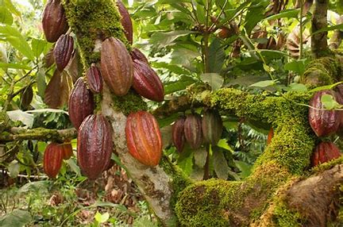
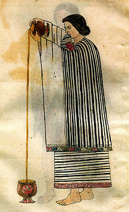
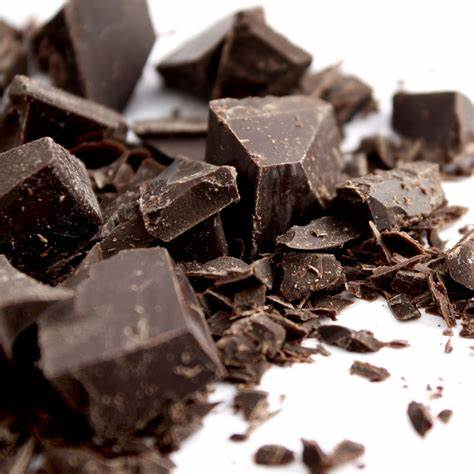
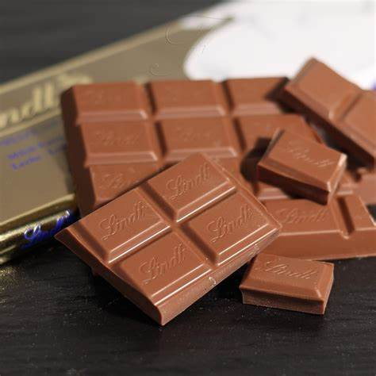
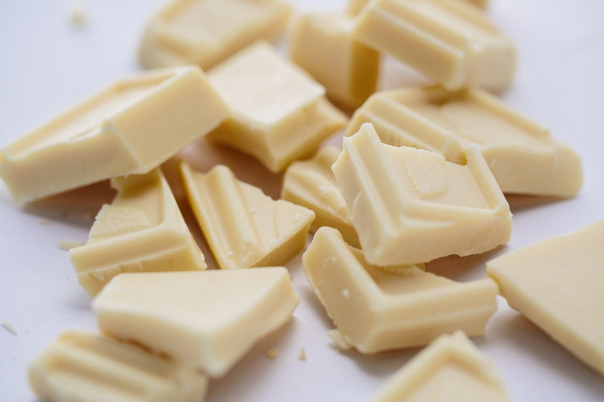

Chocolate is made from the fruit of cacao trees, which are native to Central and South America.
The fruits are called pods and each pod contains around 40 cacao beans.
The beans are dried and roasted to create cocoa beans.


Chocolate has a rich and diverse history that spans thousands of years.
Originating in Mesoamerica, ancient civilizations like the Mayans and Aztecs cherished cacao beans,
using them to create a bitter beverage with spiritual and cultural significance.
The Spanish explorers brought cacao back to Europe in the 16th century,
where it was transformed into a sweetened treat for royalty and the elite.
Over the centuries, innovations like the cocoa press and conching process revolutionized chocolate production,
making it more accessible to the masses. In the 19th and 20th centuries,
the emergence of famous chocolate brands and the introduction of milk chocolate further popularized this delectable delicacy.
Today, chocolate has become an integral part of global culture, enjoyed in various forms,
and continues to evolve as an enduring symbol of pleasure and indulgence.

Dark Chocolate:
Made with cocoa solids, cocoa butter, and sugar, dark chocolate has a higher cocoa content,
typically ranging from 50% to 90%. It has a rich, intense flavor and is often less sweet than other varieties.

Milk Chocolate:
This type of chocolate includes cocoa solids, cocoa butter, milk solids or powder, and sugar.
It has a creamy and sweeter taste, making it a popular choice for candy bars and desserts.

White Chocolate:
Although debated by some as a true chocolate, white chocolate contains cocoa butter, milk solids, sugar, and no cocoa solids.
It has a mild, creamy flavor with a vanilla undertone.